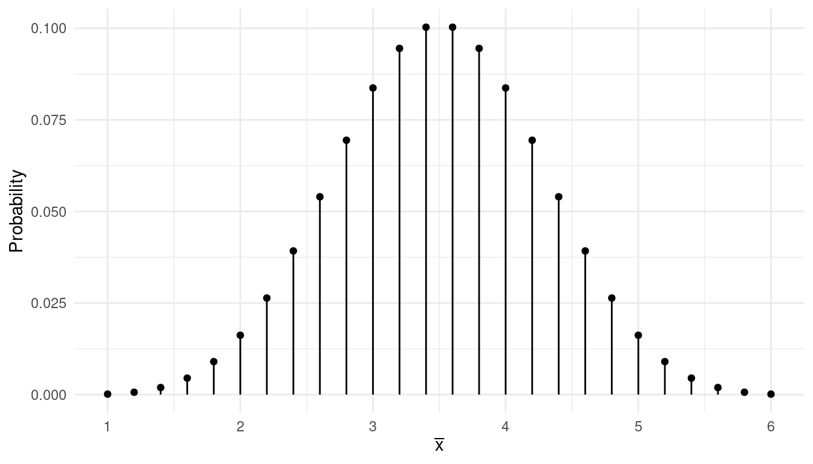
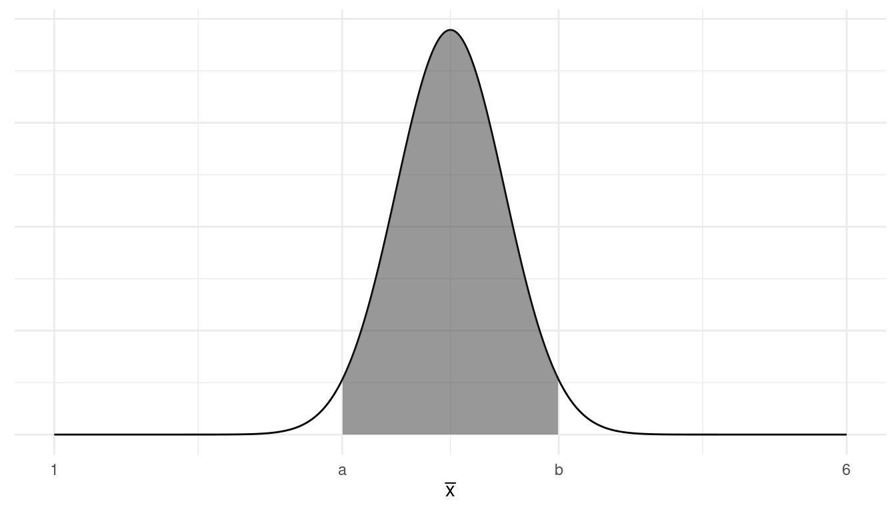
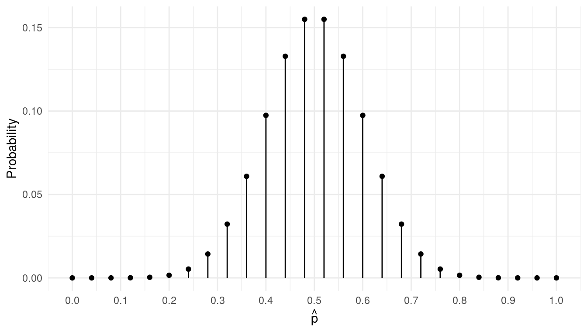
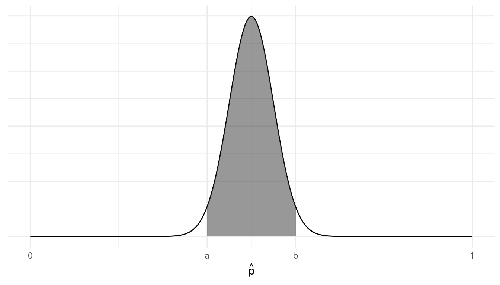

You can also download a PDF copy of this homework assignment.
Answers are given at the end.
Charles Darwin conducted a study of the heights of corn seedlings produced from cross- versus self-fertilization.1 In that study seedlings were obtained from seeds from the same plant, but one seedling was obtained from a flower that had been cross-fertilized and the other produced from a flower that had been self-fertilized. A single observation is based on the difference in the heights of the pair of seedlings produced by each pair of seeds. His study used only 15 observations. Suppose we were to replicate his study today, but using a larger sample size.
Suppose we observe the difference in the heights of each pair of seedlings by subtracting the height of the seedling produced from self-fertilization from the height of the seedling produced from cross-fertilization. We will let \(x\) denote this variable. Assume that this variable has a mean of 3 inches and a standard deviation of 5 inches. What are the mean and standard deviation of the mean (\(\bar{x}\)) computed from a sample of 25 observations? And what is the interval that has a probability of approximately 0.95 of containing \(\bar{x}\)?
Suppose that rather than observing the difference in seedling heights we simply observe whether or not the seedling produced from cross-fertilization is taller. If we let \(x\) denote this observation and suppose that the probability of that the seedling produced from cross-fertilization is taller is 0.8. We can summarize the population distribution in the following table.2
|
\(x\) |
\(P(x)\) |
|---|---|
|
cross |
0.8 |
|
self |
0.2 |
Let \(\hat{p}\) denote the proportion of observations in a sample of 25 observations where the seedling produced from cross-fertilization is taller. What are the mean and standard deviation of \(\hat{p}\)? And what is the interval that has a probability of approximately 0.95 of containing \(\hat{p}\)?
| \(x\) | \(P(x)\) |
|---|---|
| 1 | 1/6 |
| 2 | 1/6 |
| 3 | 1/6 |
| 4 | 1/6 |
| 5 | 1/6 |
| 6 | 1/6 |
This is our population distribution. Using the formulas \(\mu = \sum_x xP(x)\) and \(\sigma = \sqrt{\sum_x (x-\mu)^2 P(x)}\) it can be shown that this distribution has a mean of \(\mu\) = 3.5 and a standard deviation of \(\sigma \approx\) 1.71. This distribution is the same as that as a fair 6-sided die.
Consider the sampling distribution for the mean (\(\bar{x}\)) of a sample of five observations. This would be equivalent to the distribution of the mean of five rolls of a fair 6-sided die. I derived this distribution using the five-step method (but with a computer). It is shown below.  What are the mean and standard deviation of \(\bar{x}\)? What is the interval that has a probability of approximately 0.95 of containing \(\bar{x}\)?
Now suppose we increase the sample size to 25. For a larger sample size like this we can depict the sampling distribution more abstractly using a curve as shown below rather than using points as used in the previous problem.  What are the mean and standard deviation of \(\bar{x}\), and what is the interval that has a probability of approximately 0.95 of containing \(\bar{x}\)?
| \(x\) | \(P(x)\) |
|---|---|
| yellow | 0.5 |
| clear | 0.5 |
This would be analogous to flipping a fair coin with “heads” instead of “yellow” and “tails” instead of “clear.”
Consider the sampling distribution of the proportion (\(\hat{p}\)) of observations out of a sample of 25 observations where the female platy appears to prefer the yellow-tailed male. This would be equivalent to flipping a fair coin 25 times and computing the proportion flips on which the coin came up heads. I derived this distribution using the formula for the binomial distribution (with the help of a computer). It is shown below.  What are the mean and standard deviation of \(\hat{p}\)?
Now suppose we increase the sample size to 100. For a larger sample size like this we can depict the sampling distribution more abstractly using a curve as shown below rather than using points as used in the previous problem.  The points \(a\) and \(b\) denote the interval that has a probability of approximately 0.95 of containing \(\hat{p}\). What is this interval — that is, what are \(a\) and \(b\)? (Note: You will need to first find the mean and standard deviation of the sampling distribution to find this interval.)
| \(x\) | \(P(x)\) |
|---|---|
| yellow | 0.75 |
| green | 0.25 |
Mendel checked his hypothesis by observing many offspring and computing the proportion of offspring that had yellow peas, which we would call \(\hat{p}\). The idea is that if that proportion is relatively close to 0.75, then it would support his hypothesis. Mendel bred 8023 offspring in his study. Assuming Mendel is correct in that the probability that a single offspring will have yellow peas is 0.75, what are the mean and standard deviation of \(\hat{p}\) based on a sample of 8023 observations? And what is the interval that has a probability of approximately 0.95 of containing \(\hat{p}\)?
| Pair | Unaffected | Affected | Difference |
|---|---|---|---|
| 1 | 1.94 | 1.27 | 0.67 |
| 2 | 1.44 | 1.63 | -0.19 |
| 3 | 1.56 | 1.47 | 0.09 |
| 4 | 1.58 | 1.39 | 0.19 |
| 5 | 2.06 | 1.93 | 0.13 |
| \(\vdots\) | \(\vdots\) | \(\vdots\) | \(\vdots\) |
| 15 | 2.08 | 1.97 | 0.11 |
Here we will consider observations of the variable \(x\), representing the difference in the hippocampus volume of a pair of twins. Suppose that there is no relationship between schizophrenia and left hippocampus volume. Then the mean of the population distribution of \(x\) would be zero. Assume also that the population distribution of \(x\) has a standard deviation of 0.25 cubic cm. Let \(\bar{x}\) denote the mean difference in a sample of 15 observations. What are the mean and standard deviation of \(\bar{x}\)? And what is the interval that has a probability of approximately 0.95 of containing \(\bar{x}\)?
The sampling distribution has a mean of 3 inches and a standard deviation of 1 inch. The interval is 1 to 5 inches.
The sampling distribution has a mean of 0.8 and a standard deviation of 0.08. The interval is 0.64 to 0.96.
The mean is 3.5 meters and the standard deviation is approximately 0.76 meters. The interval is approximately 1.97 to 5.03 meters.
The mean is 3.5 meters and the standard deviation is approximately 0.34 meters. The interval is approximately 2.82 to 4.18 meters.
The mean is 0.5 and the standard deviation is 0.1. The interval is 0.3 to 0.7.
The mean is 0.5 and the standard deviation is 0.05. The interval is 0.4 to 0.6.
The mean is 0.75 and the standard deviation is approximately 0.005. The interval is approximately 0.74 to 0.76.
The mean is 0 cubic cm and the standard deviation is approximately 0.06 cubic cm. The interval is approximately -0.13 to 0.13 cubic cm.
Darwin, C. (1876). The Effect of Cross- and Self-fertilization in the Vegetable Kingdom, 2nd Ed. London: John Murray.↩︎
Assume that we measure height accurately enough so that there will not be any seedling pairs where both seedlings are exactly the same height.↩︎
Suddath, R. L., Christison, G. W., Torrey, E. F., Casanova, M. F. & Weinberger, D. R. (1990). Anatomical abnormalities in the brains of monozygotic twins discordant for schizophrenia. New England Journal of Medicine, 322(12), 789–794.↩︎